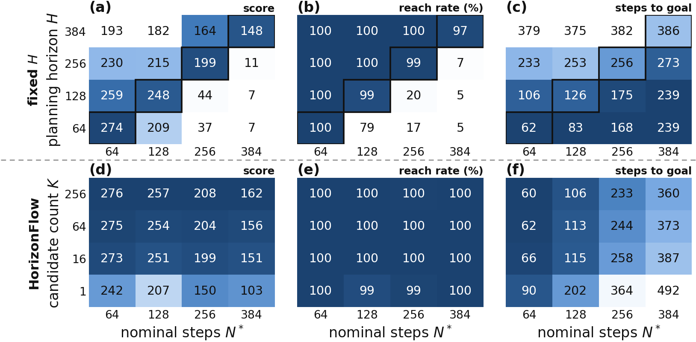

A prescribed horizon is a guess about travel time
Inpainting planners pin the start and the goal and fill in the plan between them, so the plan length is an assumed travel time chosen before any content exists. Too short, and the plan is squeezed through walls; too long, and it wanders before it arrives.

Insertion and flow matching on one clock
A plan is a set of continuous tokens between two fixed anchors, each with an order coordinate. One Transformer predicts, for every gap between neighbouring tokens, how many tokens are still missing (a hurdle zero-truncated-Poisson head), and for every token a flow-matching velocity. Sampling advances a single clock σ from 0 to 2.
At a fixed temporal resolution, the token count is the plan's duration. That makes length a free ranking signal: sample K candidates and keep the one with the fewest tokens, with no learned value function. During generation, Feynman–Kac steering uses the same count heads to move samples toward shorter plans.
A route planner for where, a prefix controller for how
Writing a whole route at action resolution means very long sequences, so HorizonFlow applies the same insertion–flow model twice. The route planner generates a variable-length sequence of latent subgoals toward the final goal and is refreshed every half training stride. The action-prefix controller generates a variable-length action prefix toward the first subgoal; it replans every step and executes only the first action. Both pick their candidate by count.
Benchmark recipe (K = 16 routes × 4 prefixes, FK at both levels). Each clip plays a whole episode in 10 seconds. Latent subgoals are drawn at the mean position of their 8 nearest dataset states in the planner's latent space; counts exclude the start and goal anchors. Clips are successful episodes picked from 16 rendered episodes, 14 of which succeeded.
Results
HorizonFlow attains the highest average in every benchmark group, with the largest margins in long-horizon environments — 95.5% on HumanoidMaze-Giant against 35% for the best prior method.
| Benchmark | Metric | Best prior method | HorizonFlow |
|---|---|---|---|
| Maze2D (single goal), 3 mazes | normalized score | 154.2SSD | 165.8 |
| Multi2D (goal resampled), 3 mazes | normalized score | 168.8SSD | 177.4 |
| OGBench navigation, 9 mazes | success % | 75.4SAW | 94.2 |
| OGBench visual manipulation, 4 tasks | success % | 49.5HIQL | 55.0 |
Averages over each group's environments. HorizonFlow uses 5, 8 and 4 training seeds for Maze2D/Multi2D, navigation and visual manipulation; 250 problems per OGBench environment (50 per task). Per-environment numbers and all baselines are in the paper's Table 1.
Does the generated count know the distance?
| Length signal (2,400 Maze2D-Large pairs) | Spearman ρ with N* | ρ on pairs with N* ≥ 300 |
|---|---|---|
| VH-Diffuser predicted length | 0.653 | 0.070 |
| HIQL value-derived length | 0.924 | 0.371 |
| HorizonFlow generated count | 0.954 | 0.617 |
Both levels matter
| Architecture (OGBench navigation) | Average success % |
|---|---|
| Flat planner (no route planner) | 42.9 |
| Route planner + behavior-cloning controller | 67.8 |
| Route planner + prefix controller (HorizonFlow) | 94.2 |
About 8.5 ms of model computation per environment step at the default settings (RTX 5090).
BibTeX
@article{oh2026horizonflow,
title = {HorizonFlow: Variable-Length Planning for Offline Goal-Conditioned RL},
author = {Oh, JunHyeok and Jang, Zian and Lee, Byung-Jun},
journal = {arXiv preprint arXiv:2609.36896},
year = {2026}
}